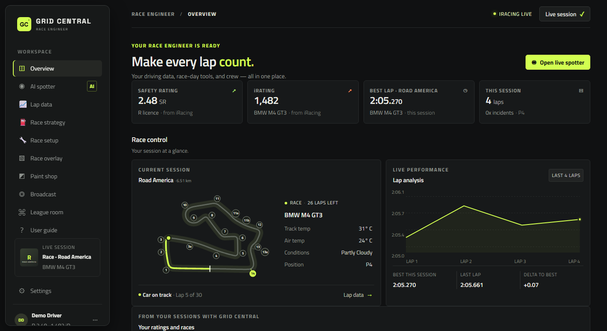
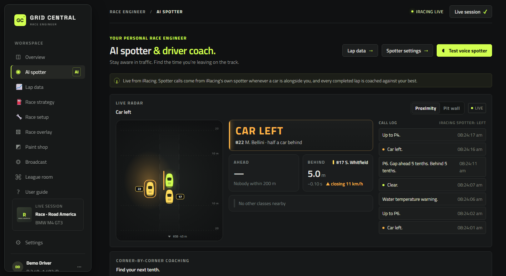
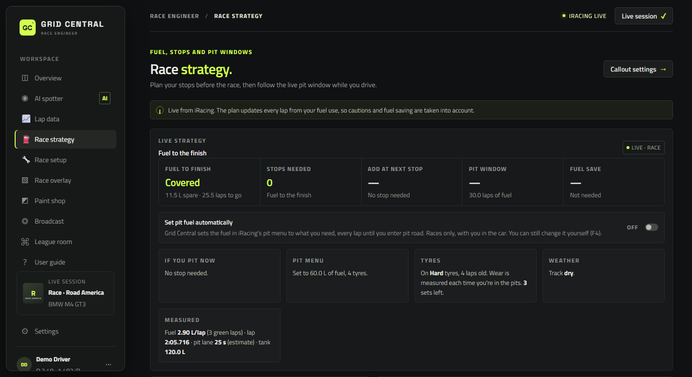
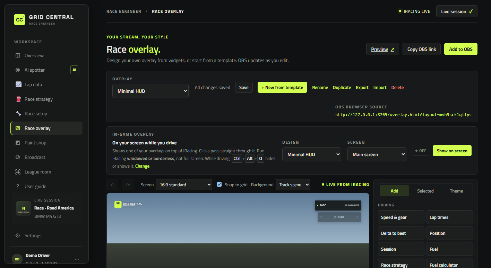
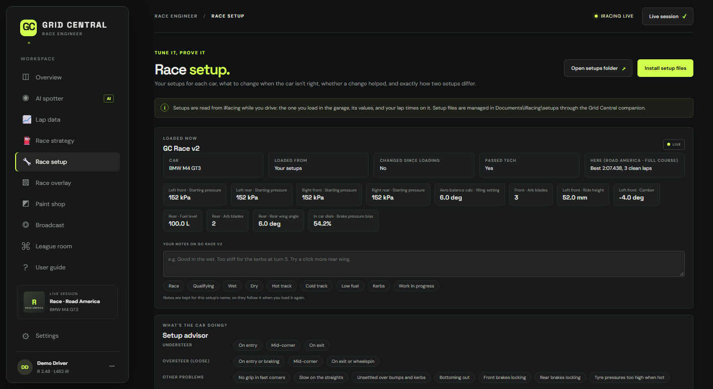
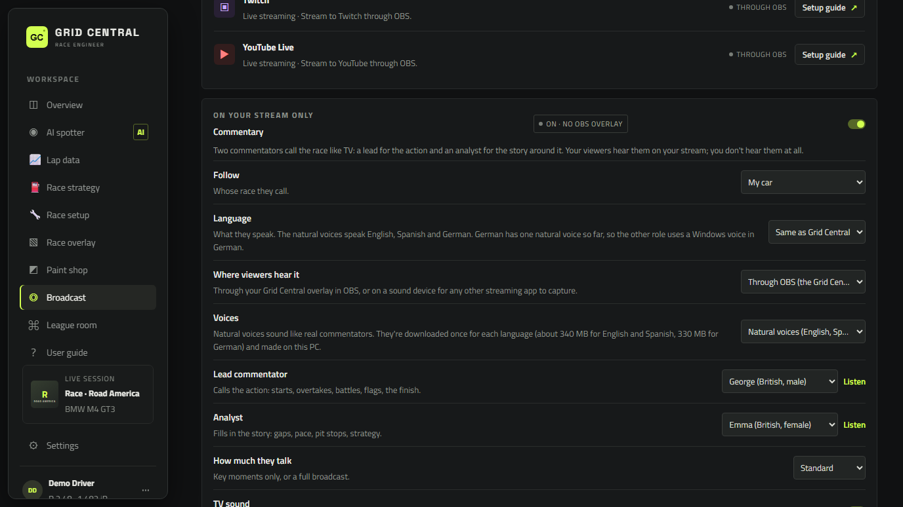
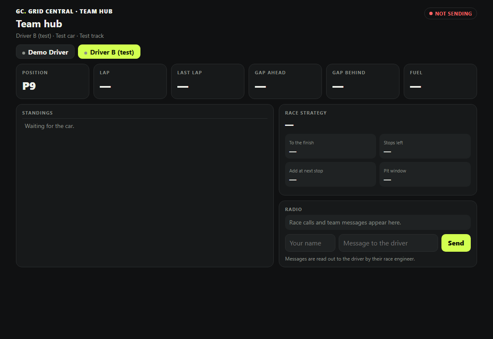

Your race engineer,
in your ear.
Grid Central calls the cars around you, coaches you corner by corner, works out your fuel and pit stops, and answers when you ask. It runs on your PC alongside iRacing.
Closed beta now · English, Español, Deutsch

Everything a race engineer does, on one screen.
Live data comes straight from iRacing on your PC. Nothing about your driving leaves your computer unless you share it.
Voice spotter and engineer
Car left, car right, clear. Flags, gaps, fuel, damage, weather and pit calls, read out in a natural voice and never talking over each other.
Ask, and it answers
Hold a wheel button and ask "how's the fuel?" or "gap behind?", or tell it "four new tyres, fill it up". Recognised offline, in English, Spanish or German.
Find your next tenth
Every lap is compared with your best, corner by corner: braking, apex speed, exits. One focus corner at a time until it's fixed.
Fuel to the finish
Live fuel per lap, laps to go, the pit window and what to add. It can even set the fuel in iRacing's pit menu for you.
Setup help that makes sense
Say "it's understeering" or "it bottoms out" and get the garage change to try. Compare setups by the laps you drove on them.
Overlays for stream and screen
Design your own from widgets, or start from a template: standings, relative, fuel, tyres, flags, track map, captions and more. Add it to OBS in one click, or show it over iRacing while you drive.
Race commentary for your stream
Two commentators call the race like TV: overtakes, battles, pit stops, flags and the finish. Your viewers hear them through OBS or any streaming app; you don't.
Paint your car, helmet and suit
Start from iRacing's template and patterns, recolour, add numbers and logos, choose a finish from matte to chrome, and watch it change on your car in iRacing as you paint.
Phone pit wall and team hub
Live timing and strategy on your phone, and a team page your crew can follow from anywhere, with no setup on the Team plan. Driver swaps and team messages read out to the driver.
Results in your league's Discord
Race results and session summaries with fuel use and tyre wear, personal bests, "going live" with all your stream links, and a league bot for schedules and sign-ups.
Built for race day.
Captured from a race in Grid Central's built-in demo.






Start free, go Pro when you're ready.
Grid Central is in a closed beta. Plans open at launch, starting with a 7-day free trial of everything, no card needed.
Free
- Voice spotter: cars alongside, flags, hazards
- Live dashboard and your lap times
- A basic overlay for OBS
- Car painting
Pro
- Your engineer and coach on the radio, and Talkback
- Race strategy and setups
- Lap comparison and telemetry
- Every overlay widget, the in-game overlay and stream commentary
- Helmet, suit, finishes and Live in iRacing
- Phone pit wall, Discord and the team hub
- Monthly or yearly, one PC
Team
- Pro for every driver in your team, each on their own PC
- A team hub that just works, no setup
- One bill: choose how many seats
Beta testers get 12 months of Pro free at launch.
Drive it before launch.
Testers get a personal beta code, the Setup download, and updates as they're released. Tell us what you race and we'll send you a code.
What you need
- Windows 10 or 11, 64-bit
- iRacing
- Microsoft Edge (built into Windows) for Grid Central's window and natural voices
- A microphone and a free wheel button for Talkback (optional)
- Internet once to download Talkback's speech model (about 40 MB)
Good to know.
Does Grid Central work with iRacing's own spotter?
Yes. Grid Central uses iRacing's live data on your PC, including when a car is alongside you, and adds its own engineer, coaching and strategy calls on top. You can turn any call type off.
Does it send my data anywhere?
No. Laps, setups and settings stay on your PC. Only the things you choose to share leave it, such as the team hub, the phone pit wall or Discord posts.
How does it get data from iRacing?
A small companion program reads iRacing's live telemetry on your PC, the same way other sim racing tools do. It only reads; it never changes anything in iRacing except the pit menu, and only when you ask it to.
Windows says it doesn't recognise the Setup program.
The beta isn't code-signed yet. Choose More info, then Run anyway. Signed releases are coming before launch.
Will I hear the stream commentary while I drive?
No. The commentary plays only into your stream: through the Grid Central overlay in OBS, or a sound device your streaming app captures. Your viewers hear it, and you hear only your spotter and engineer.
Do I need an account?
For the free trial and Pro, yes: an email and password, so your subscription can follow you to a new PC. Your laps, settings and paints still stay on your PC.
Which languages does it speak?
English, Spanish and German: the app, your engineer's voice, and Talkback.